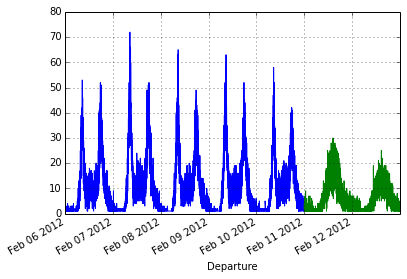
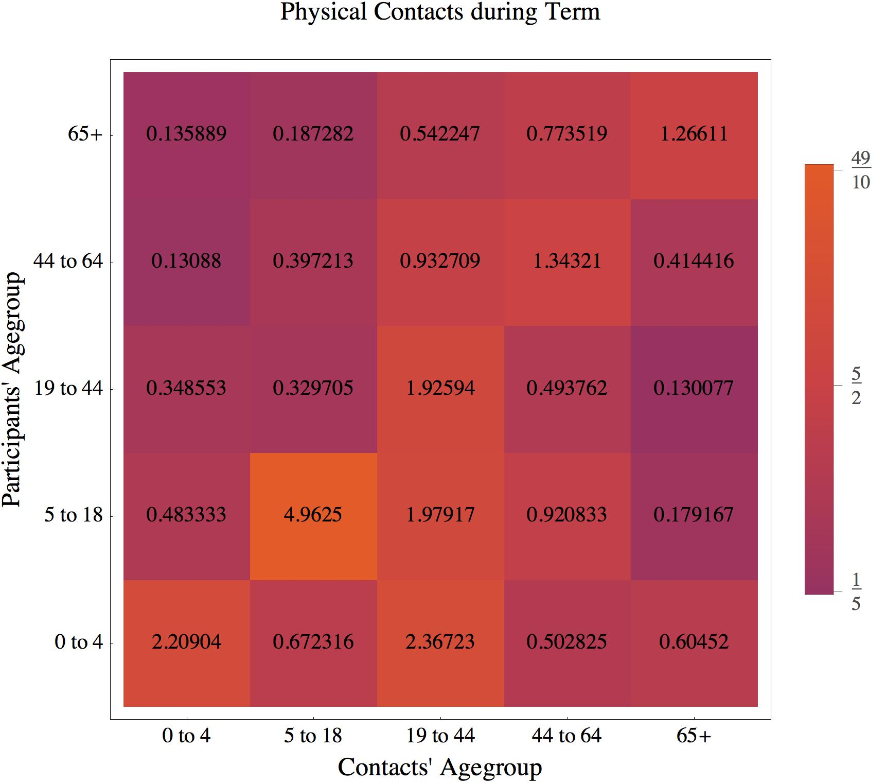

Pictured, is an early insight from my investigation: weekdays
have two ridership peeks while the weekends have one. In fact,
national holidays have one peek too, just like the
weekends!

The matrix-plot shows how different age-groups interact with
each other (derived from the biggest survey of influenza-like
illness in the UK) which plays a significant role in the
transmission of infectious disease.
RC
The Recurse Center (RC), formally known as Hacker School, is a competitive self-directed educational retreat in NYC for people who want to get better at programming.